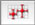

A document can contain several data sets. The lateral drawer shows:
To show or hide the lateral drawer, select .
To create a data set, click on the button +. To delete the selected data set, click on the button -. To rename a data set, double-click on its name. To hide a data set, uncheck its name in the list. To sort the points in a data set, click on the button Sort.
To change the appearance of a data set (color, line, style of the markers), use the Appearance Inspector. To display the inspector, select (⇧⌘I) and click on the Appearance icon: .
To change the coordinates or the error values for all selected points at once, enter the desired values in the Points Inspector. To display the inspector, select (⇧⌘I) and click on the Points icon:

.You can move the selected points by using the arrow keys of the keyboard. Keep the ⇧ key down to move the points by 1/5 points. Keep the ⇧ and ⌥ keys down to move the points by 5 points.
You can also move the selected points with the mouse by holding the ⌥ key down and dragging a selected point.
To label a point, double-clic the corresponding cell in the #-column and enter the desired label. If the label is empty, the index of the point is used instead.